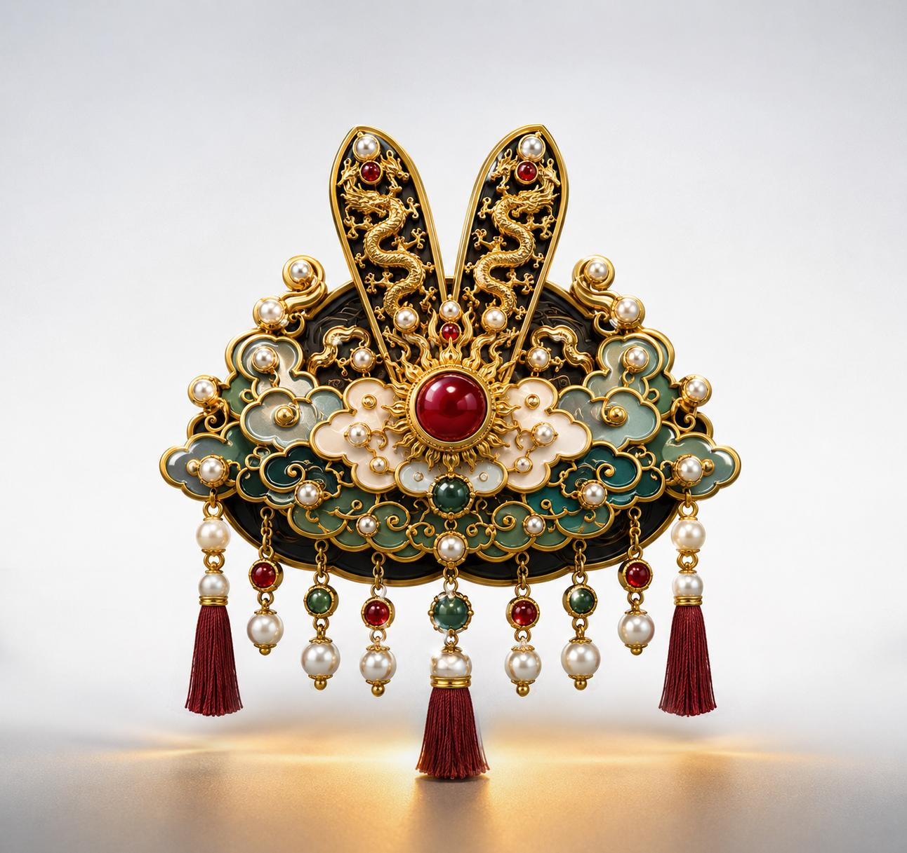
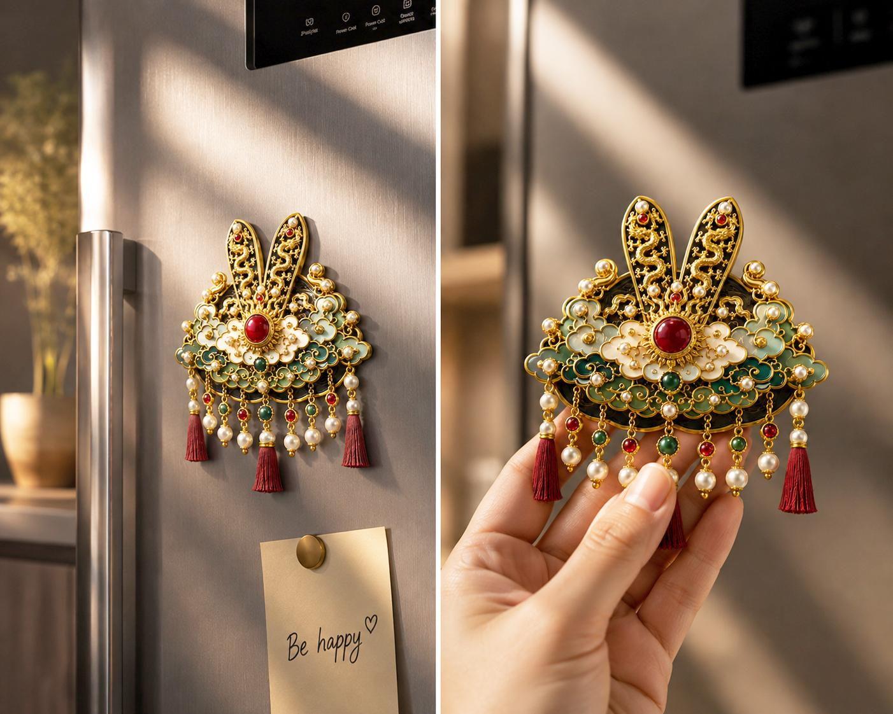
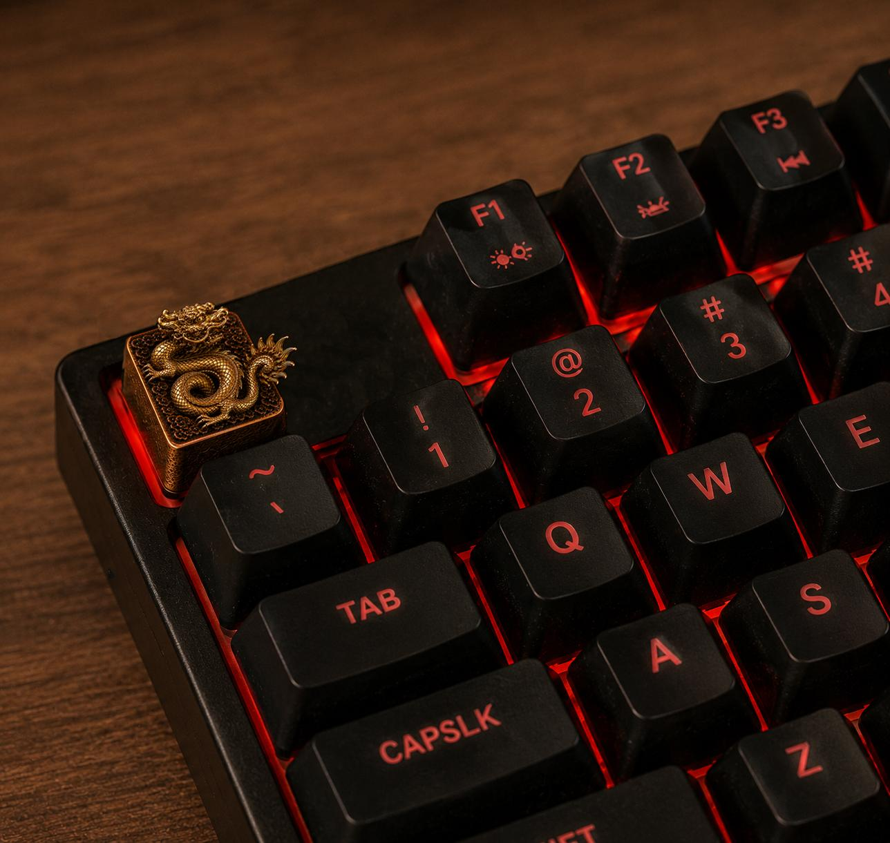
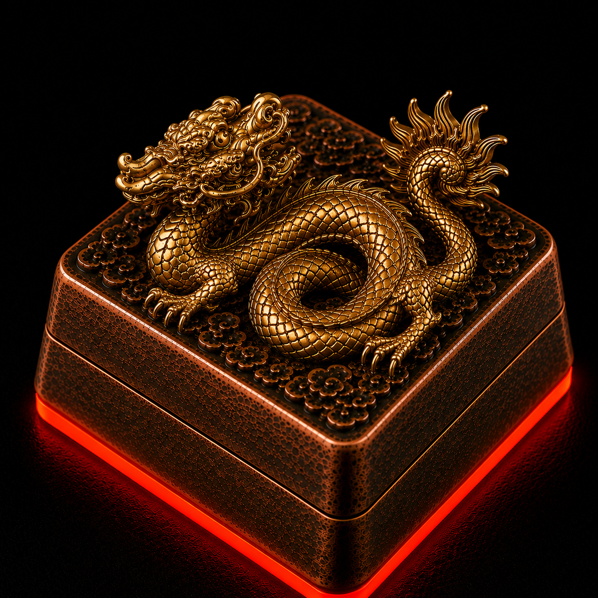
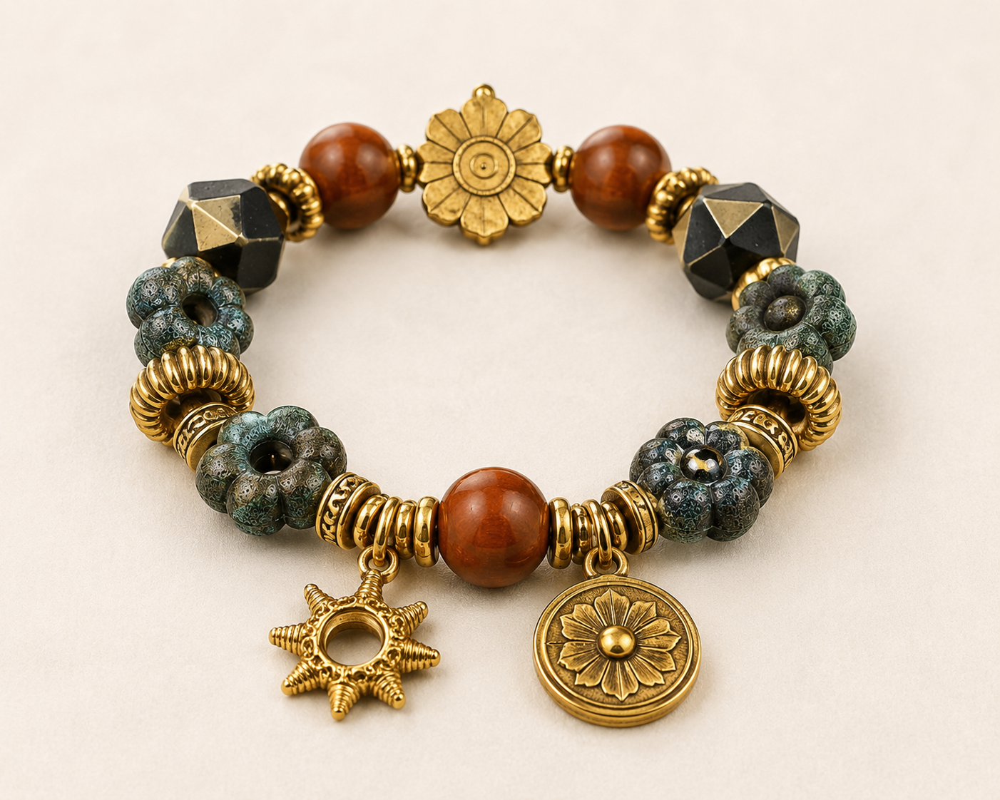
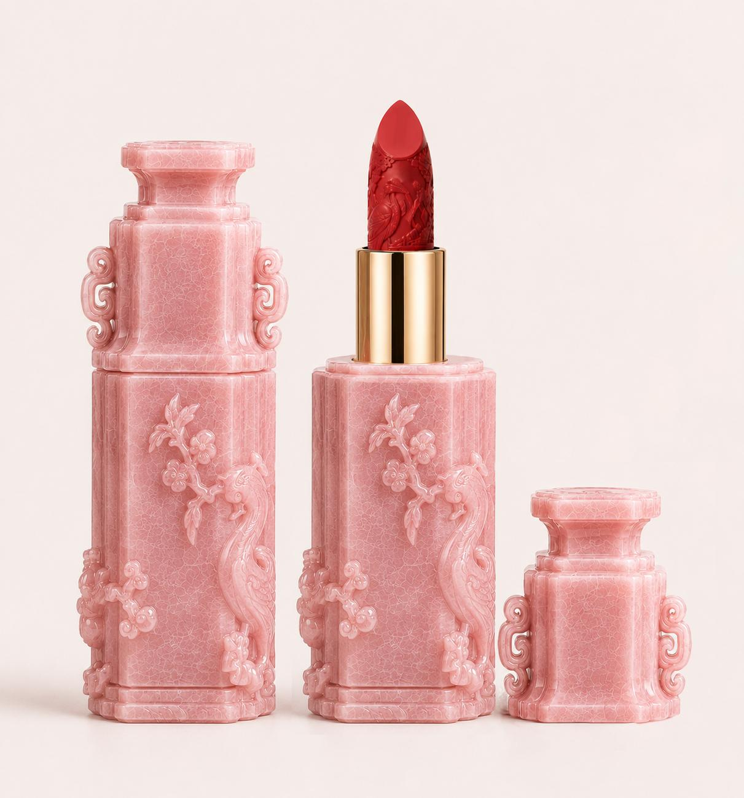
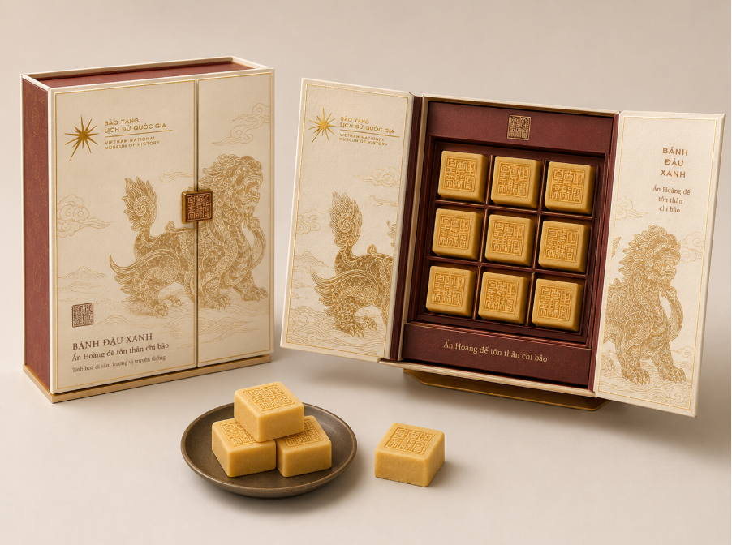

01

Mũ thượng triều
Miếng dán tủ lạnh – Uy nghi cung đình
Sắp ra mắtPhụ kiện · Quà tặng
BỘ SƯU TẬP VĂN HÓA SÁNG TẠO 2026

Từ trang sức, vật phẩm công nghệ đến quà tặng ẩm thực — mỗi thiết kế là một cánh cửa dẫn vào lịch sử.

THIẾT KẾ TIÊU ĐIỂMTỪ ẤN VÀNG ĐẾN PHÍM CƠ
Hình rồng trên ấn “Sắc mệnh chi bảo” được thu nhỏ thành một phím cơ độc bản. Sắc vàng cổ, nền đen sâu và ánh đỏ tạo nên cuộc đối thoại giữa quyền uy xưa và văn hóa công nghệ hôm nay.
Khám phá keycap ấn triện →





“Khi một hiện vật bước ra khỏi tủ kính, lịch sử bắt đầu một đời sống mới.”Xem hồ sơ ý tưởng →